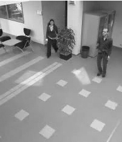
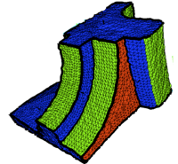
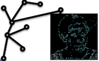

|  | ANR Canada (2007-2010) - Comportements Anormaux : Analyse, Détection, Alerte |
|  | ANR Madras (2008-2011) - 3D Models And Dynamic models Representation And Segmentation |
|  | ANR Sattic (2007-2011) - Strings and Trees for Thumbnail Images Classification. |